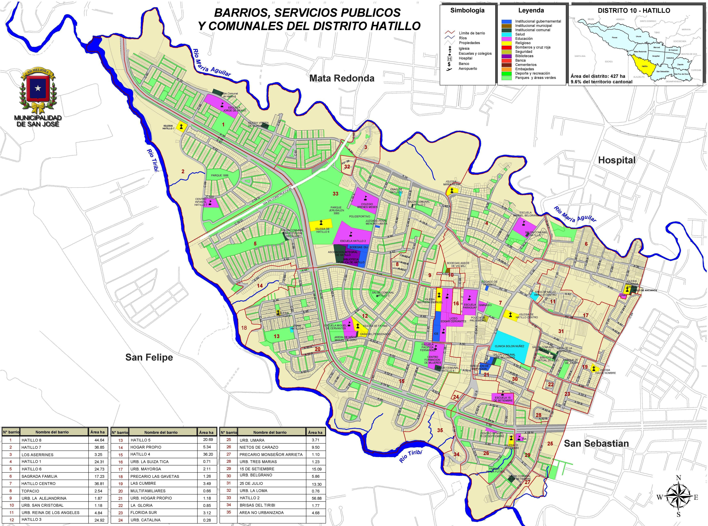

Hatillo es el décimo distrito del cantón San José. Según el censo del Instituto Nacional de Estadística y Censos (INEC) del año 2011 la población era de 50.511 habitantes y con alrededor de 14.451 viviendas en 4,27 km²,3, esto indica que es uno de los distritos más poblados del cantón, la densidad de habitantes por kilómetro cuadrado obtenida en ese momento alcanzaba los 11.829 pobladores.
Según la página Wikipedia se puede asegurar que el distrito de "Hatillo se ubica en el suroeste de la ciudad capital de Costa Rica entre los ríos María Aguilar y Tiribí. Limita al norte con los distritos de Mata Redonda y Hospital, al este con el de San Sebastián y al sur y al oeste con el cantón de Alajuelita", la extensión territorial que abarca este distrito es de 4,27 km² aproximadamente
El distrito de Hatillo se encuentra conformado por los siguientes barrios:
Para conocer la distribución de los barrios, servicios públicos y comunales del distrito puede consultar el siguiente mapa:
